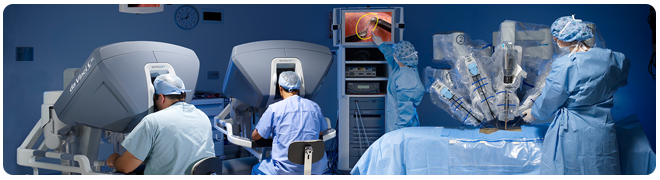

|  | |
| 近年來微創手術(Minimal Invasive Surgery,MIS)成了外科手術的主要發展趨勢。由於光纖技術的進步、內視鏡影像傳輸顯示的發展和手術器械的改良，現今的腹腔鏡手術，醫師只需要打幾個小洞就可完成以往需開膛剖肚才能完成的手術。和傳統的剖腹手術相比，微創手術不僅傷口較小、較不會留下長長的傷疤，同時也可以減少術中的出血量、降低術後傷口部位的疼痛感、減少住院天數、縮短術後復原所需時間。因此腹腔鏡手術近年來被大量運用在膽囊切除、闌尾切除、腎上腺切除、腎切除、根治性乙狀結腸切除、直腸切除、升結腸切除、子宮根除等手術，也有相當良好成效。然而傳統腹腔鏡手術只能提供二度空間影像，因此對於某些較複雜的手術，醫師操作起來相當有難度。 「達文西機器手臂手術系統」利用三度空間攝影內試鏡、經由三度空間攝影內試鏡影像處理系統，讓手術醫師有立體空間感，且可放大影像，讓醫師可以更清楚地看到手術部位。再結合機械手臂配合有七個自由度可活動的器械，可精確模擬醫師手、腕、指自然動作，以高達540度靈活旋轉角度，模仿人類雙手做旋轉、抓取、捏夾的動作。且可消除手部的顫動，大幅提升手術的精準度與靈活度，輔助醫師精確切除病灶，執行縫合，讓微創手術擴及原本認為困難且複雜的手術，例如攝護腺根治性切除手術、部分腎切除術、根治性膀胱切除術、冠狀動脈繞道手術、二尖瓣環成形術等，大大降低醫師手術之體力負荷、減少疲累感、減少出錯機會。 高雄榮民總醫院為服務南部病患，引進最新「達文西機器手臂手術系統」，並將相關科醫師送至國內外醫院受訓。包括泌尿外科、婦產科、一般外科、大腸直腸外科、心臟外科、胸腔外科、耳鼻喉科，為病人與家屬提供手術治療的新選擇。 | |
|
在本網站提供的資訊僅供您做為手術評估方案的參考，您仍須跟您的醫師詳細討論達文西手術是否適合您的情況。任何手術都有風險且依每個人的情況不同，達文西手術未必適用於每一個人。如果您是在考慮採用達文西手術的病患，請與合格且熟悉達文西手術的醫師諮詢是否適用達文西手術。 |